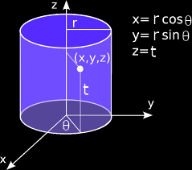

Coordinate Systems
Coordinates are "functions" that specity points of a space. The smallest number of these function necessary to specify a point is called the dimension of that space. For instance, a point of a plane is specified by two numbers, and as the point moves in the plane the two numbers change, i.e., the coordinates are function of the position of the point. If we designate the point as P, we may write the coordinate functions of P as (f(P), g(P)). Think of f (or g) as a rule by which a unique number is assigned to each point P. Each pair of such functions is called a coordinate system.
There are two coordinate systems used for a plane, Cartesian, denoted (x(P), y(P)), and polar, denoted (r(P), θ(P)). The "function" x is defined as giving the distance from P to the vertical axis, while θ is the funciton which gives the angle that the line OP makes with a given fiducial (usually horizontal) line. The origin O and the fiducial line are completely arbitrary. Similarly, the function r and y give distances from the origin and to the horizontal axis, respectively.
Notation. In practice, one drops the argument P and writes (x,y) and (r, θ).
We can generalize the above concept to three dimensions. There are three coordinate functions now. So for a pont P in space we write
(f(P), g(P), h(P))
where f,g and h are functions on the three-dimensional space. In three dimension, there are three widely used coordinate systems,
Cartesian, (x(P), y(P),z(P));
Cylindrical, (r(P),θ(P),z(P));
Spherical, (r(P),θ(P),φ(P)), φ(P) is called the azimuth or the azimuthal angle of P, one chooses an arbitrary point as the origin O and an arbitrary line through O called the polar axis. One measures OP and calle it r(P); θ(P is the angle between OP and the polar axis.
Vectors in Different coordinate systems
Many physical situations require the study of vectors in different coordiantes systems, e.g. the study of the solar system is best done in spherical coordinates because of the nature of the gravitational force. Similarly calculation of electromagnetic fields in a cylindrical cavity will be easier if we use cylindrical coordinates. This requires not only writing functions in terms of these coordinates variables, but also expressing vectors in terms of unit vectors suitable for these coordinates systems. It turns out that, for the three coordinates systems described above, the most natural construction of such vectors renders them mutually perpendicular.
Any set of three (two) mutually perpendicualr unit vectors in space (in the plane) is called an orthonormal basis. The word "orhogonal" comes from orthogonal meaning "perpendicular", and normal meaning "of unit length". Basis vectors have the property that any vector can be written in terms of them.
Let us start with the plane in which the coordinate system could be Cartesian or polar. In general, we construct an orthonormal basis at a point and note that
Observation. The orthonormal basis, generally speaking, depends on the point at which it is constructs.
The vectors of a basis are constructed as follows. To find the unit vector corresponding to a coordiante at a point P, hold the other coordinates fixed and increase the coordinate in question. The initial direction of motion of P is the direction of the unit vector sought. Thus, we obtain the Cartesian unit vectors at a point P of Figure 1(a): ex is obtained by holding y fixed and letting x vary in the increasing direction; and ey is obtained by holding y fixed and letting x vary in the increasing direction; and ey is obtained by holding x fixed at P and letting y increase. However, the reader should take not that this is true only for coordinates that are defined in terms of axes whose directions are fixed, such as Cartesian coordinates.
If we use polar coordinates for P, then holding θ fixed at P gives the direction er as shown in Fig.1(b), because for fixed θ, that is the direction of increase for r. Similarly, if r is fixed at P, the initial direction of motion of P whrn θ is increased is that of eθ shown in the figure. If we choose another point such as Q shown in the figure, then a new set of unit vectors will be obtained which are different from those of P. This is because polar coordinates are not defined in terms of any fixed axes.
Since {ex, ey} and {er,eθ} form a basis in the plane, any vector a in the plane can be expressed in terms of either basis as shown in Fig.2. Thus, we can write
a = axPexP + ayPeyP = arPerP + aθPeθP = arQerQ + aθQeθQ (1)
where the coordinates are subscripted to emphasize their dependence on the point at which the unit vectors are erected. In the case of Cartesian coordinates, this, of course, is not necessary because the unit vectors happen to be independent of the point. In the case of polar coordinates, although this dependence exists, we normally do not write the point as subscripts, being aware of this dependence every time we use polar coordinates.
Eq. (1) can also be written using brackets, reserving parenteses for coordinates of points in space.
a = ⟨ax, ay⟩P = ⟨ar, aθ⟩P = ⟨ar, aθ⟩Q
where again the subscript indicating the point at which the unit vectors are defind is normally deleted. However, we need to keep in mind that although ⟨ax, ay⟩ is independent of the point in question, ⟨ar, aθ⟩ is very much point-dependent. Caution should be exercised when using this notation as to the location of the unit vectors.
Coordinte polari nel piano
In polar coordinates, the position of a particle at point P, is determined by the value of the radial distance to the origin, r, and the angle that the radial line makes with an arbitrary fixed line, such as the x axis. Thus, the trajectory of a particle will be determined if we know r and θ as a function of t, i.e. r(t), θ(t). The directions of increasing r and θ are defined by the orthogonal unit vectors er and eθ, come in fig. 4.

Si noti che questi versori cambiano direzione (ruotano) durante il moto, rimanendo ancorati al punto materiale a differenza dei versori nel sistema di coordinate cartesiane che rimangono fissi nel tempo (Fig.1).
Da notare inoltre, che θ non è necessario per specificare r (quindi P), infatti proiettando r sull'asse del versore eθ non si hanno componenti. La direzione del versore er, che è una funzione dell'angolo polare: r̂(θ). Si ha quindi
volendo si può rendere la dipendenza più esplicita e scrivere
Per trovare le trasformazioni tra coordinate cartesiane (x,y) ∈ ℝ2 e polari (r,θ) ∈ ℝ2, si noti che
r = (x2 + y2)1/2
rappresenta la distanza (x,y) dall'origine e θ è l'angolo formato tra il vettore ⟨x,y⟩ e l'asse x, orientato positivamente. Perciò si ha
Questa trasformazione di coordinate si può vedere come una funzione f : ℝn → ℝn, (x,y) = f(r,θ). Le coordinate polari sono utili per rappresentare insiemi di funzioni aventi qualche simmetria rispetto all'origine.
Componenti polari della velocità
Per trovare la velocità calcoliamo la derivata di r rispetto al tempo
e
La relazione tra i versori polari e i versori Cartesiani è la seguente:
e
si ha quindi
da cui
Coordinate cilindriche nello spazio (r,θ,z)
Polar coordinates can be extended to three dimensions in a very straightforward manner. We simply add the z coordinate, which is then treated in a cartesian like manner. Every point in space is determined by the r and θ coordinates of its projection in the xy plane, and its z coordinate. The base vectors of the r,θ,z coordinate system are unit vectors directed in the radial, tangential and axial directions, as illustrated in Fig.2. They are denoted by er, eθ, ez, and they are mutually orhogonal.
In cylindrical coordinates, er lines along and point in the direction of increasing r at P; eθ is perpendicular to the plane formed by P and the z-axis and point in the direction of increasing θ; ez points in the diretion of positive z. We note that only ez is independent of the point at which the unit vectors are defined because z is a fixed axis in cyclindrical coordinates. Given any vector a, we can write it as
a = arer + aθeθ + azez, or a = ⟨ar, aθ, az⟩
The coordinates of P are (r,θ, z) and vector r pointing at P is
r = rer + zeθ
Per descrivere insiemi o fuzioni ℝ3 che abbiamo qualche simmetria rispetto all'asse z sono utili le coordinate cilindriche (r,θ, t) per le quali si ha
Anche queste si possono vedere come una funzione f: ℝ3 ⟶ ℝ3. Si noti che la funzione g: ℝ2 ⟶ ℝ3 che si ottiene da questa fissando il valore della prima variabile r rappresentata la superficie della sfera di raggio r, in forma parametrica
Coordinate sferiche (r,θ,φ)
Per descrivere insiemi o funzioni in ℝ3 che abbiano qualche simmetria rispetto all'origine, sono utili le coordinate sferiche che utilizzano due angoli ed una distanza (r,θ,φ), per le quali si ha:
Anche queste si possono vedere come una fuznione f: ℝ3 ⟶ ℝ3. Si noti la funzione g: ℝ2 ⟶ ℝ3 che si ottiene da queesta fissando il vlaore della prima variabile r rappresenta la superficie della sfera di raggio r, in forma parametrica
Example. A point charge q is situated at the origin. A second charge q' is located at (x,y,z) as shown in Fig.3. We want to express the electric force on q' in Cartesian, spherical, and cylindrical coordinate system.
We know that the electric force, as given by Coulomb's law, lies along the line joining the two charges and is either attractive or repulsive according to the sings of q q'. All of this information can be summarized in the formula expressed in spherical coordinates
Fq' = (keqq'/r2)er
where ke = 1/(4πε0) ≈ 9 x 109 in SI units. Note that if q and q' are unline, qq' < 0 and Fq' is opposing to er, i.e., it is attractive. On the other hand, if q and q' are of the same sign, qq' > 0 and Fq' is in the same direction as er, i.e., repulsive.
Thus the components of Fq' in spherical coordinates are ⟨keqq'/r2, 0, 0⟩. To get the components in the other coordinate systems, we rewrite the Coulomb's law noting that er = r/r
Fq' = (keqq'/r2)r/r = keqq'/r3 r
For Cartesian coordinates knowing that r3 = (x2 + y2 + z2)3/2 and substituting in the previous, yields
Therefore, the components of Fq' in Cartesian coordinates are
Finally, we obtain the expression in Cylindrical coordinates
Thus the components of Fq' along the cylindrical unit vectors constructed at the location of q' are